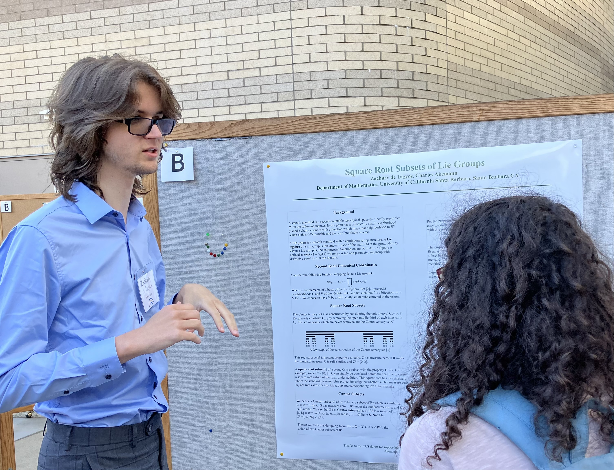

About Me
Hello! I’m Zachary de Tagyos, a mathematics tutor dedicated to helping students build confidence, deepen understanding, and develop a genuine appreciation for math.
My Teaching Strategy
Instead of simply giving answers, I guide students with thoughtful questions that help them unravel concepts, examine their reasoning, and make connections they may not have noticed before. This method builds genuine understanding, not memorization. It strengthens critical-thinking skills, boosts confidence, and helps students develop the ability to solve new problems independently. By actively engaging in the learning process, students become partners in their own progress.
Qualifications and Experience
I completed a B.S. in mathematics from UC Santa Barbara and am currently working towards a masters in computer science at Georgia Tech. For more than 6 years, I’ve been working with learners of all ages, guiding them through challenging concepts and turning confusion into clarity. Working at Mathnasium and as a private tutor I have supported students with elementary through high school math topics including AP Calculus. I have also coached students for math competitions such as the AMC8 and MATHCOUNTS.